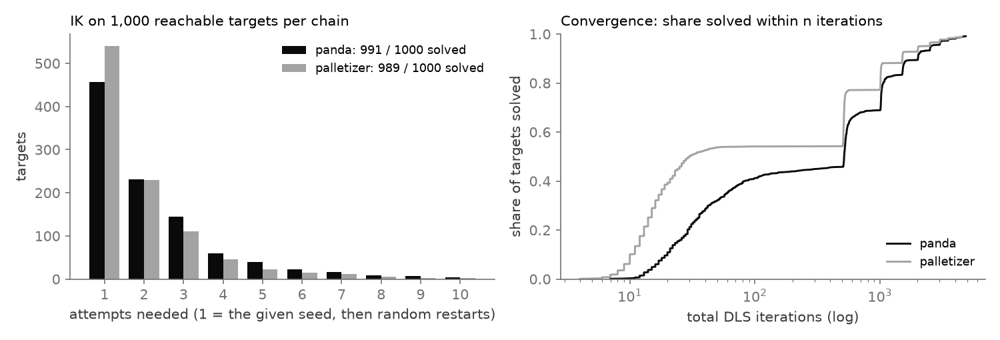
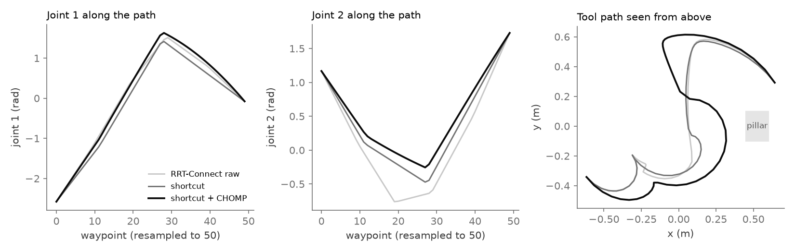
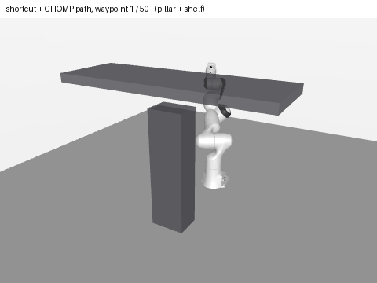
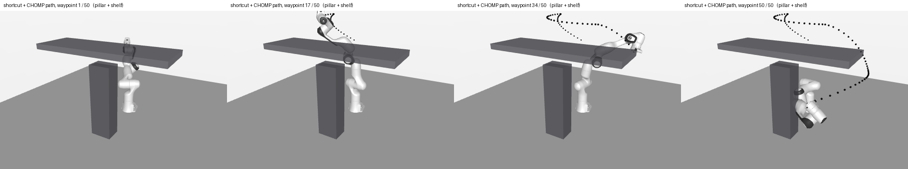

Eigen kinematics for any serial chain given as a DH table, checked against MuJoCo, finite differences and a separate MATLAB implementation. OMPL plans around obstacles, a CHOMP-style optimizer smooths the result, and a ROS 2 node executes it in a 500 Hz loop that counts its own missed deadlines.
A Jacobian with a sign error still moves the arm. An IK solver can call a near-miss a success. A smoothed path can cut through the obstacle it used to avoid. None of these crash; they just make the robot slightly wrong. The fix is to check every piece against something that was not written the same way.
A Franka Panda (7 joints, modified DH) and a made-up 4-axis palletizer whose passive wrist pitch keeps the tool level, both from DH tables.
Twenty Panda moves were picked so that the straight joint-space line hits the floor, a pillar or an overhead shelf.
MuJoCo kinematics, central finite differences, and a MATLAB re-implementation run in R2026b.
Dynamics or hardware. The node drives a kinematic simulation on a normal Linux kernel.
ROS 2 Jazzy, OMPL, Eigen and libmujoco from pixi, with no sudo.
Standard or modified DH, passive coupled joints, a tool frame. FK returns an Eigen::Isometry3d; the geometric Jacobian is checked against MuJoCo's mj_jacSite and finite differences.
Damped least squares with joint limits and task masks. Success means the position error norm is under 1e-4 m and rotation under 1e-3 rad; otherwise it restarts from a random seed, up to 10 times.
OMPL RRT-Connect in joint space with spheres along the links against boxes, then vertex reduction and partial shortcutting. Every path is re-checked at 0.01 rad spacing.
A CHOMP-style optimizer trades smoothness against an obstacle cost with covariant gradient descent. The ROS 2 node executes the shortcut path in a 500 Hz thread that records how late each wake-up was.
A separate script rebuilds both chains and compares FK and Jacobians.
Raw, shortcut and CHOMP paths each pass a dense collision check.
Mean, p50, p99 and max wake-up lateness per run.
Release build, colcon test, one loaded machine. Planning numbers are medians over the 20 blocked queries.
Each row on its own scale; values as labelled. Lower is better for smoothness and length, higher for clearance.
Same binary, back to back, another build running on the machine. Bar length to 650.
| Check | Max error | Against |
|---|---|---|
| Panda FK position | 1.0e-15 m | MuJoCo 3.16, 1,000 configs |
| Panda Jacobian | 3.8e-15 | MuJoCo mj_jacSite |
| Jacobian, both chains | 4.4e-10 | central finite differences |
| Jacobian, Panda / palletizer | 3.3e-16 / 4.4e-16 | MATLAB R2026b, 100 configs each |
| IK position error of successes | 1.0e-4 m | the stated tolerance, by norm |

kinmp_demo_dump with the same generator and seeds (991 and 989 solved again). Most solve from the given seed; the steps on the right are the 500-iteration restarts.


scripts/make_demo_figures.py.Tolerance was checked per axis, so some successes were 1.6e-4 m off against a stated 1e-4 m. Checking the norm, with 10 attempts of 500 iterations, took the Panda from 929 to an honest 991 of 1,000.
The line search gave up after 8 step halvings, and cost fell on only 9 of 20 queries. The obstacle gradient, scaled by the smoothness metric, needs much smaller steps; 30 halvings gave 20 of 20.
One run missed 620 of 4,712 deadlines while another build loaded the machine. Without the counter it would have looked fine, because the arm still reached its goal.
OMPL 2.0 has no shortcutPath; the planner moved to partialShortcutPath.
Kinematic simulation, no dynamics or hardware. Spheres against boxes, no meshes and no self-collision. About 1% of IK targets fail. Soft real time only. The goal is a topic, not a service or action.
A uniform-time parameterization so the node can execute CHOMP paths, self-collision, a service or action interface, CI, and a SCHED_FIFO / PREEMPT_RT experiment.
pixi install scripts/build_and_test.sh # colcon build + test pixi run install/kinmp/lib/kinmp/kinmp_planning_node # the node pixi run install/kinmp/lib/kinmp/kinmp_demo_dump results/demo